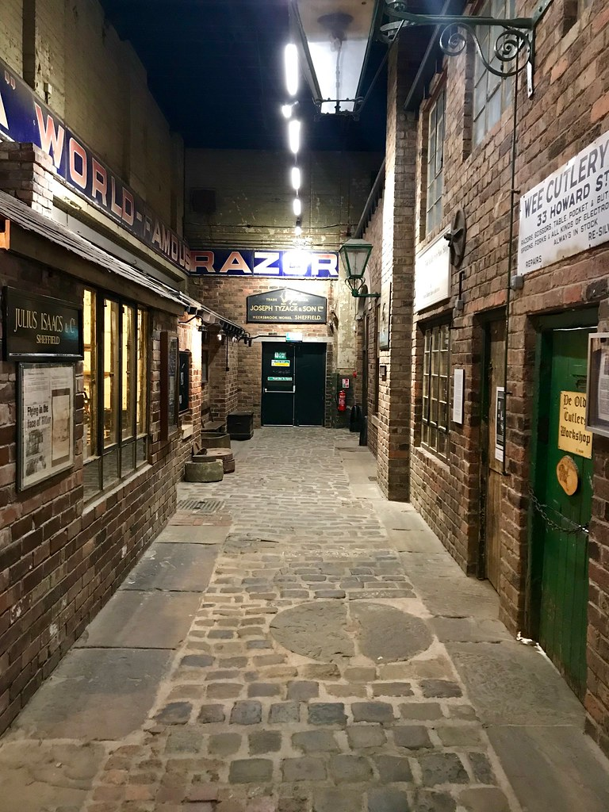
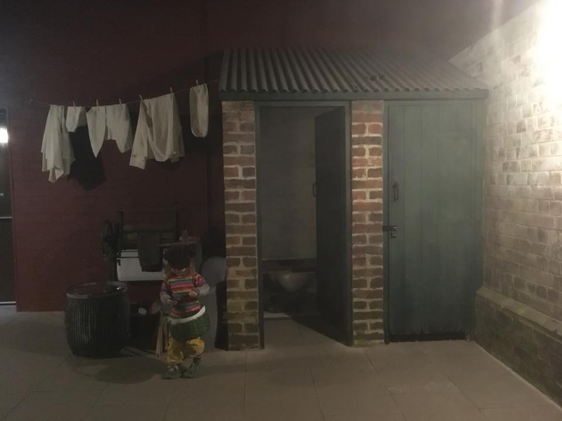
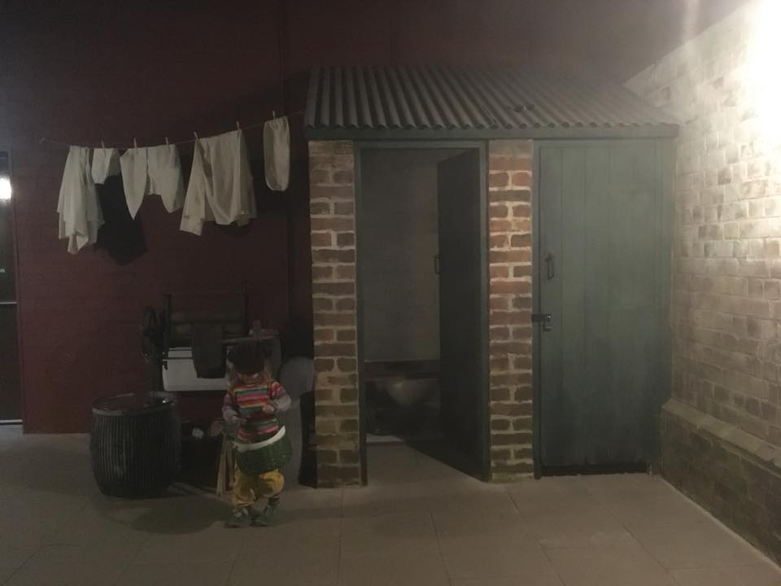

Welcome to the Kelham Island Website
Kelham Island Gallery
 

More information about Kelham Island Museum
Kelham island Located in one of the city’s oldest industrial districts, the museum stands on a man-made island over 900 years old Kelham Island Museum was opened in 1982 to house the objects, pictures and archive material representing Sheffield’s industrial story. Our interactive galleries tell the story from light trades and skilled workmanship to mass production and what it was like to live and work in Sheffield during the Industrial Revolution. Follow the growth of the steel city through the Victorian Era and two world wars to see how steelmaking forged both the city of today and the world!
Kelham Island Museum was opened in 1982 to house the objects, pictures and archive material representing Sheffield's industrial story. Come and explore the sights and sounds of industrial Sheffield. Wander through interactive galleries telling the city's story, from light trades and skilled workmanship to mass production. Learn what it was like to live and work in Sheffield during the Industrial Revolution and follow the growth of the city through the Victorian Era and two world wars, to see how steelmaking forged both the city of today and the world!
Located in one of the Sheffield's oldest industrial districts, the museum stands on a man-made island over 900 years old. It's also home to the mighty 12,000hp River Don Engine, the most powerful working steam engine in Europe, while outside you'll be greeted by one of the few remaining Bessemer Converters in the world!
Sheffield Museums Trust is the independent charity that operates six of the city’s leading museums and heritage sites: Abbeydale Industrial Hamlet, Graves Gallery, Kelham Island Museum, Millennium Gallery, Shepherd Wheel and Weston Park Museum. Established in 2021, the charity cares for the city’s collections of art, human and industrial history, and natural science, alongside the Guild of St George’s John Ruskin collection and is home to the Ken Hawley Collection Trust’s Hawley Tool Collection.
We work with our communities to tell the remarkable story of Sheffield and its people, and celebrate its reputation for excellence in craft, making and innovation. Together with local, regional and national partners, we showcase home-grown creative talent and bring outstanding cultural experiences to the city.